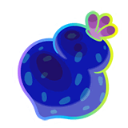

A pesar de ser llamadas "Bayas", la mayoría están inspiradas en Frutas o verduras, con el caso más extremo siendo el de la Baya Algama, que está inspirada en un alga, e incluso con eso, sigue creciendo en árboles como las demás

Todas las Bayas tienen una inspiración real en alguna planta, y sus nombre son una deformación de dichas inspiracipnes
A pesar de ser llamadas "Bayas", la mayoría están inspiradas en Frutas o verduras, con el caso más extremo siendo el de la Baya Algama, que está inspirada en un alga, e incluso con eso, sigue creciendo en árboles como las demás

Las Bayas de hecho, también son usadas en otros juegos, como lo es Pokémon Espada y Escudo, o Leyendas Pokémon Z-A, pero no se mencionaron esos casos aquí porque, en primera: Su uso en esos juegos no tiene nada que ver con las estadísticas de concurso que era más el enfoque al que se quería llegar, y en segunda: Las mecanicas para las que se usan las Bayas en esos juegos requieren de mucha aleatoreidad, por lo que no podría ser recreado tan fácilmente con JavaScript
El primer juego en el que se añadieron Bayas, tenía Bayas muy diferentes a las actuales, siendo mucho más simples tanto en mecánicas de combate como en nombre, ésto inmediatamente lo cambiaron al juego siguiente, dandonos las Bayas modernas